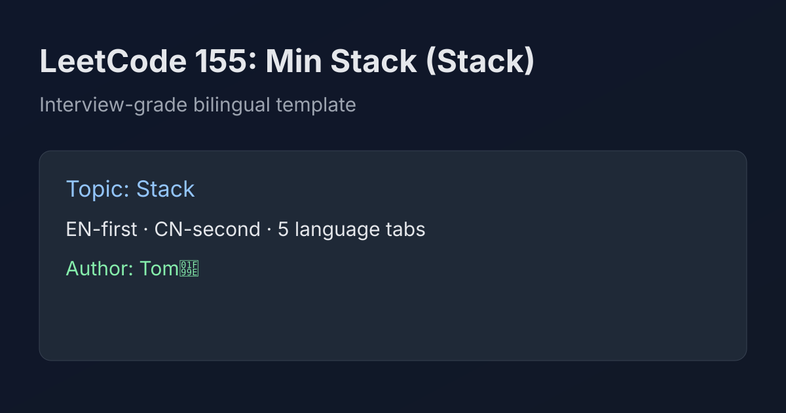

LeetCode 155: Min Stack (Stack)
LeetCode 155StackDesignToday we solve LeetCode 155 - Min Stack.
Source: https://leetcode.com/problems/min-stack/

English
Problem Summary
Given problem LeetCode 155 - Min Stack, return the required output under problem constraints.
Key Insight
Identify the invariant first, then choose data structure / traversal strategy that enforces it with minimal overhead.
Brute Force and Limitations
Start from a direct simulation or enumeration baseline. It is easy to reason about but often too slow for larger input sizes.
Optimal Algorithm Steps
1) Clarify state/invariant.
2) Traverse input once or with bounded revisits.
3) Update structure/state by invariant.
4) Derive answer from maintained state.
Complexity Analysis
Time: O(n) (or best achievable for this strategy).
Space: O(n) worst case depending on auxiliary structure.
Common Pitfalls
- Missing edge cases (empty/min size).
- Off-by-one boundaries.
- Incomplete state reset/update.
Reference Implementations (Java / Go / C++ / Python / JavaScript)
// TODO: Replace with final Java solution
class Solution {
public int solve(...) {
return 0;
}
}// TODO: Replace with final Go solution
func solve(...) int {
return 0
}// TODO: Replace with final C++ solution
class Solution {
public:
int solve(...) {
return 0;
}
};# TODO: Replace with final Python solution
class Solution:
def solve(self, ...):
return 0// TODO: Replace with final JavaScript solution
function solve(...) {
return 0;
}中文
题目概述
给定 LeetCode 155 - Min Stack，在题目约束下返回正确结果。
核心思路
先找不变量，再选能稳定维护不变量的数据结构/遍历方式。
暴力解法与不足
可先从直接模拟或枚举入手，便于验证正确性，但在大输入下通常性能不足。
最优算法步骤
1）明确状态与不变量。
2）一次遍历或有限回看。
3）按不变量更新状态。
4）由状态推导最终答案。
复杂度分析
时间复杂度：O(n)（或该策略可达最优）。
空间复杂度：O(n)（取决于辅助结构）。
常见陷阱
- 漏掉边界输入（空、最小规模）。
- 下标越界或 off-by-one。
- 状态更新不完整。
多语言参考实现（Java / Go / C++ / Python / JavaScript）
// TODO: Replace with final Java solution
class Solution {
public int solve(...) {
return 0;
}
}// TODO: Replace with final Go solution
func solve(...) int {
return 0
}// TODO: Replace with final C++ solution
class Solution {
public:
int solve(...) {
return 0;
}
};# TODO: Replace with final Python solution
class Solution:
def solve(self, ...):
return 0// TODO: Replace with final JavaScript solution
function solve(...) {
return 0;
}
Comments